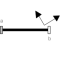

FixedRotationFixed translation followed by a fixed rotation of frame_b with respect to frame_a |

|
Information
This information is part of the Modelica Standard Library maintained by the Modelica Association.
Component for a fixed translation and fixed rotation of frame_b with respect to frame_a, i.e., the relationship between connectors frame_a and frame_b remains constant. There are several possibilities to define the orientation of frame_b with respect to frame_a:
- Planar rotation along axis 'n' (that is fixed and resolved in frame_a) with a fixed angle 'angle'.
- Vectors n_x and n_y that are directed along the corresponding axes direction of frame_b and are resolved in frame_a (if n_y is not orthogonal to n_x, the y-axis of frame_b is selected such that it is orthogonal to n_x and in the plane of n_x and n_y).
- Sequence of three planar axes rotations. For example, "sequence = {1,2,3}" and "angles = {90, 45, -90}" means to rotate frame_a around the x axis with 90 degrees, around the new y axis with 45 degrees and around the new z axis around -90 degrees to arrive at frame_b. Note, that sequence={1,2,3} is the Cardan angle sequence and sequence = {3,1,3} is the Euler angle sequence.
By default, this component is visualized by a cylinder connecting frame_a and frame_b, as shown in the figure below. In this figure frame_b is rotated along the z-axis of frame_a with 60 degree. Note, that the two visualized frames are not part of the component animation and that the animation may be switched off via parameter animation = false.

Parameters (18)
| animation |
Value: true Type: Boolean Description: = true, if animation shall be enabled |
|---|---|
| r |
Value: {0, 0, 0} Type: Position[3] (m) Description: Vector from frame_a to frame_b resolved in frame_a |
| rotationType |
Value: Modelica.Mechanics.MultiBody.Types.RotationTypes.RotationAxis Type: RotationTypes Description: Type of rotation description |
| n |
Value: {1, 0, 0} Type: Axis Description: Axis of rotation in frame_a (= same as in frame_b) |
| angle |
Value: 0 Type: Angle_deg (°) Description: Angle to rotate frame_a around axis n into frame_b |
| n_x |
Value: {1, 0, 0} Type: Axis Description: Vector along x-axis of frame_b resolved in frame_a |
| n_y |
Value: {0, 1, 0} Type: Axis Description: Vector along y-axis of frame_b resolved in frame_a |
| sequence |
Value: {1, 2, 3} Type: RotationSequence Description: Sequence of rotations |
| angles |
Value: {0, 0, 0} Type: Angle_deg[3] (°) Description: Rotation angles around the axes defined in 'sequence' |
| shapeType |
Value: "cylinder" Type: ShapeType Description: Type of shape |
| r_shape |
Value: {0, 0, 0} Type: Position[3] (m) Description: Vector from frame_a to shape origin, resolved in frame_a |
| lengthDirection |
Value: to_unit1(r - r_shape) Type: Axis Description: Vector in length direction of shape, resolved in frame_a |
| widthDirection |
Value: {0, 1, 0} Type: Axis Description: Vector in width direction of shape, resolved in frame_a |
| length |
Value: Modelica.Math.Vectors.length(r - r_shape) Type: Length (m) Description: Length of shape |
| width |
Value: length / world.defaultWidthFraction Type: Distance (m) Description: Width of shape |
| height |
Value: width Type: Distance (m) Description: Height of shape |
| extra |
Value: 0.0 Type: ShapeExtra Description: Additional parameter depending on shapeType (see docu of Visualizers.Advanced.Shape) |
| R_rel |
Value: if rotationType == Types.RotationTypes.RotationAxis then Frames.planarRotation(Modelica.Math.Vectors.normalizeWithAssert(n), Cv.from_deg(angle), 0) else if rotationType == Types.RotationTypes.TwoAxesVectors then Frames.from_nxy(n_x, n_y) else Frames.axesRotations(sequence, Cv.from_deg(angles), zeros(3)) Type: Orientation Description: Fixed rotation object from frame_a to frame_b |
Inputs (2)
| color |
Default Value: Modelica.Mechanics.MultiBody.Types.Defaults.RodColor Type: Color Description: Color of shape |
|---|---|
| specularCoefficient |
Default Value: world.defaultSpecularCoefficient Type: SpecularCoefficient Description: Reflection of ambient light (= 0: light is completely absorbed) |
Connectors (2)
Components (4)
| R_rel |
Type: Orientation Description: Fixed rotation object from frame_a to frame_b |
|
|---|---|---|
| world |
Type: World |
|
| R_rel_inv |
Type: Orientation Description: Inverse of R_rel (rotate from frame_b to frame_a) |
|
| shape |
Type: Shape |
Used in Examples (6)
|
Modelica.Mechanics.MultiBody.Examples.Elementary Demonstrate usage of ForceAndTorque element |
|
|
Modelica.Mechanics.MultiBody.Examples.Rotational3DEffects Demonstrates that a cylindrical body can be replaced by Rotor1D model |
|
|
Modelica.Mechanics.MultiBody.Examples.Constraints Body attached by one spring and two prismatic joints or constrained to environment |
|
|
Modelica.Mechanics.MultiBody.Examples.Constraints Body attached by one spring and revolute joint or constrained to environment |
|
|
Modelica.Mechanics.MultiBody.Examples.Constraints Body attached by one spring and spherical joint or constrained to environment |
|
|
Modelica.Mechanics.MultiBody.Examples.Constraints Body attached by one spring and universal joint or constrained to environment |
Used in Components (2)
|
Modelica.Mechanics.MultiBody.Examples.Loops.Utilities Cylinder with rod and crank of a combustion engine |
|
|
Modelica.Mechanics.MultiBody.Examples.Loops.Utilities One cylinder with analytic handling of kinematic loop |